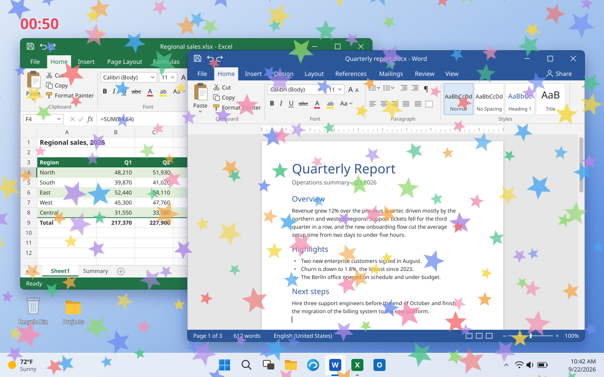

Free · for Windows
Take the break
your eyes deserve.
Enso Retreat is a small app that periodically blocks your screen and gives you a moment to look away, stretch and rest your eyes — then quietly gets out of your way again.
Free and open source. Runs quietly until it's time for a break.

Why it helps
Small nudges, on your terms.
A handful of settings, none of them mandatory.
Rest your eyes
Let yourself rest, look afar and run through a quick eye-gymnastics routine on every break.
Set your own rhythm
Configure the timing however you wish — a classic Pomodoro schedule, or anything else, down to a custom Crontab pattern.
Stays out of your way
Breaks can be skipped automatically while a chosen app is running, or when there's been no activity to interrupt.
Make it yours
Any picture can be shown as a gentle, transparent overlay while the screen is locked — your favourite wallpapers included.

See it in action
A minute of your day, back.
Enso Retreat is already embedded into Enso Launcher as an optional module, but here you can download it as a standalone app.
Ready to take a breather?
Download Enso Retreat, set a schedule that suits you, and let it remind you when it's time to look away.